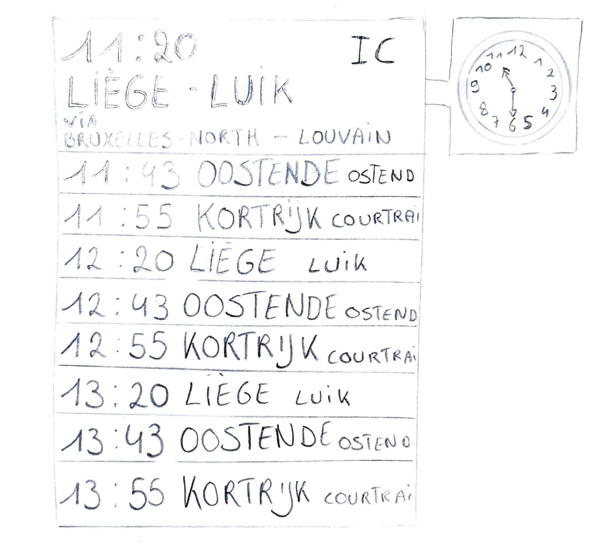
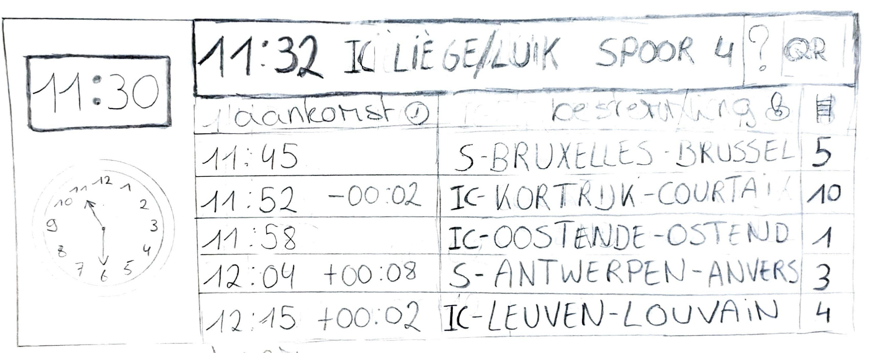
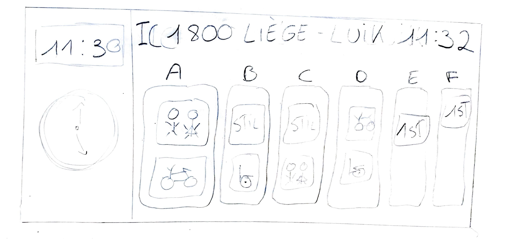
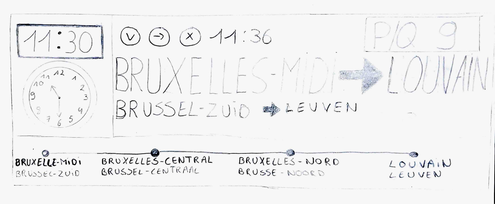

Week 1 — Introductie & UX/UI prototyping
Tijdens de eerste week werd de opdracht Lost in Tra(i)nslation geïntroduceerd en bespraken we de doelstellingen van het project. We kregen een introductie in UX/UI-prototyping en maakten kennis met de interface en basishandelingen in Figma.
In deze week heb ik zelf verschillende schetsen gemaakt om te onderzoeken hoe informatie op treinschermen duidelijk en overzichtelijk kan worden weergegeven. Mijn focus lag nog niet op lettertypes of tekstgroottes, maar volledig op de structuur en indeling van de schermen. Het doel was om een solide basisstructuur te bepalen die later verder uitgewerkt kon worden.
Perronscherm


Overzichtcherm

Wagonscherm

Extra
